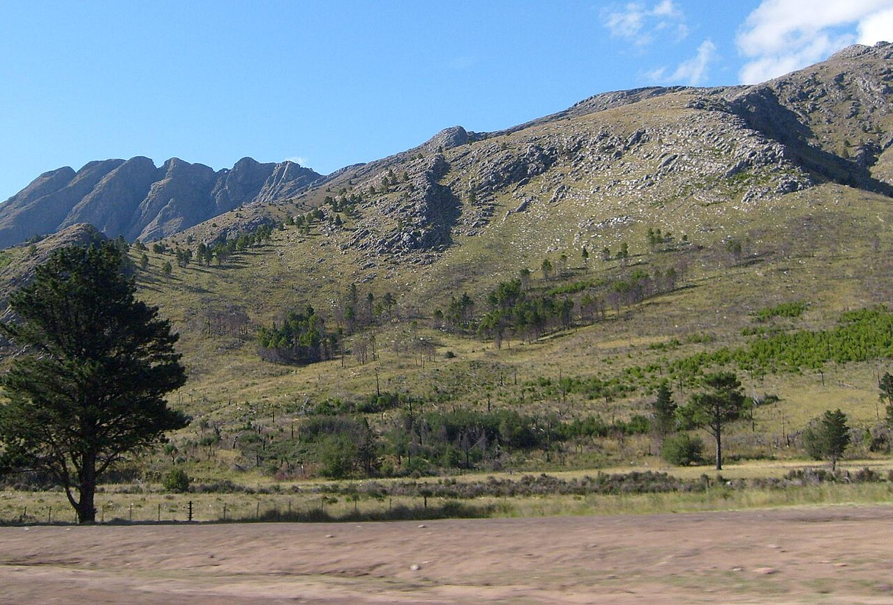
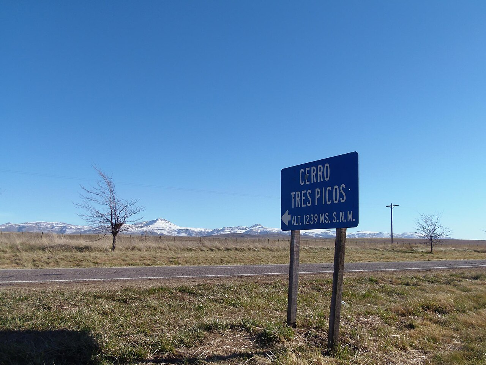

Punto de encuentro
Av. San Martín 540
Sierra de la Ventana, partido de Tornquist
Algunas salidas salen del acceso al Parque Tornquist, RP 76 km 226.

Agencia de tours · Sierra de la Ventana
Cerro Ventana, Garganta del Diablo, Cueva del Toro, Villa Ventana y cabalgata. Cada salida tiene foto del lugar, duración y dificultad. La plaza se anota en este navegador.
Catálogo
Precio por persona. En cada tarjeta: foto del lugar, duración y dificultad. Tocá para el detalle y pedir plaza.
Paisajes
Cerro, garganta, cueva, parque, pueblos, arroyo, golf y miradores. Tocá una tarjeta. Los senderos del parque se habilitan según el clima.
El equipo

Ubicación
Av. San Martín 540
Sierra de la Ventana, partido de Tornquist
Algunas salidas salen del acceso al Parque Tornquist, RP 76 km 226.
Agua, calzado con suela, gorra y documento. El cerro pide más piernas que la Garganta.
Plazas
Elegí la salida, cuántas plazas y un nombre. Queda en este navegador para el panel de la agencia.
Av. San Martín 540, Sierra de la Ventana. Algunas salidas salen del acceso al parque Tornquist (avisar en notas).
Agua, calzado con suela, gorra y documento. El cerro pide más piernas que la Garganta.
Transferencia, efectivo y Mercado Pago. Seña del 30% para confirmar.